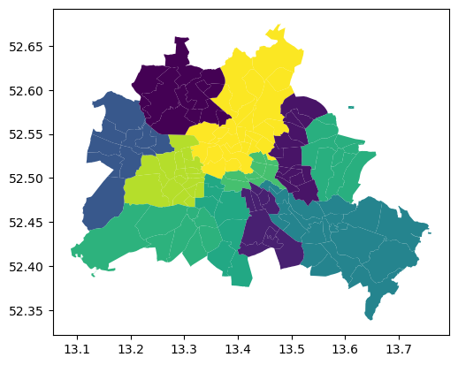
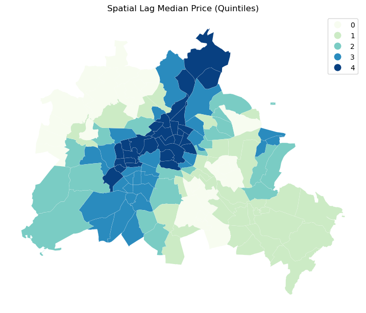
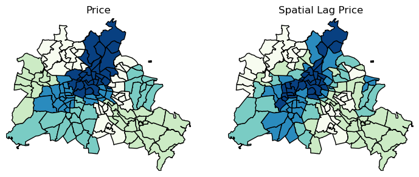
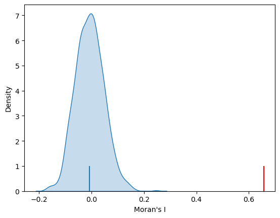
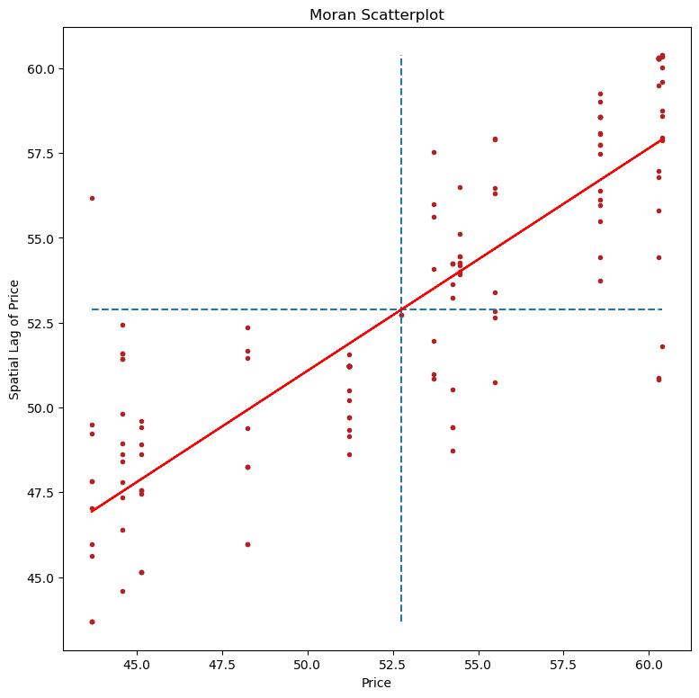
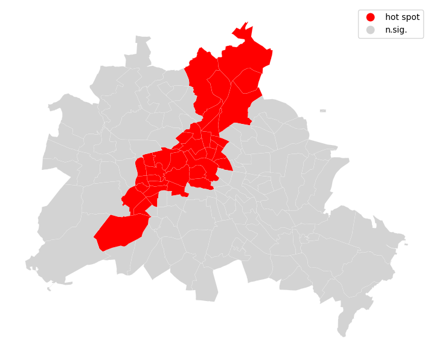
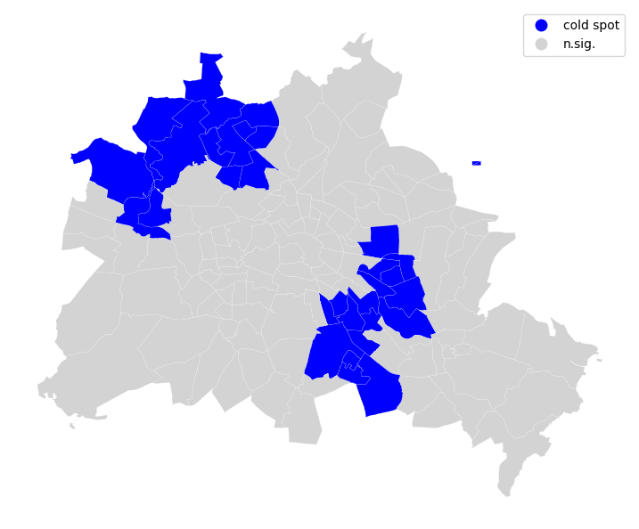
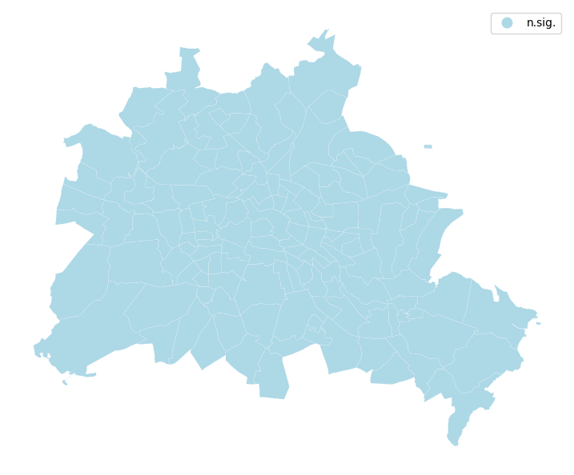
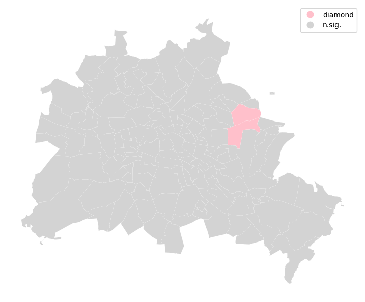
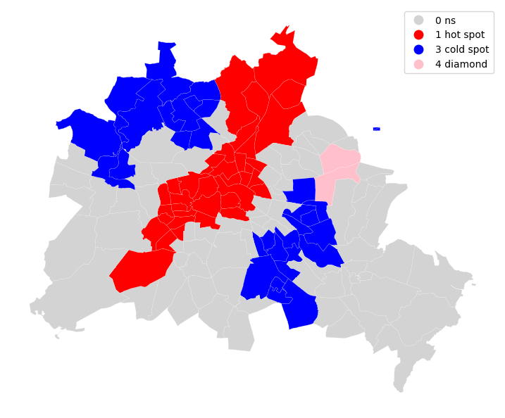

This page was generated from build/jupyter_execute/user-guide/spatial_autocorrelation_for_areal_unit_data.ipynb.
Interactive online version:

Exploratory Analysis of Spatial Data: Spatial Autocorrelation¶
In this notebook we introduce methods of exploratory spatial data analysis that are intended to complement geovizualization through formal univariate and multivariate statistical tests for spatial clustering.
Imports¶
[1]:
import warnings
import geopandas as gpd
import libpysal as lps
import matplotlib.pyplot as plt
import numpy as np
import pandas as pd
import esda
Our data set comes from the Berlin airbnb scrape taken in April 2018. This dataframe was constructed as part of the GeoPython 2018 workshop by Levi Wolf and Serge Rey. As part of the workshop a geopandas data frame was constructed with one of the columns reporting the median listing price of units in each neighborhood in Berlin:
[2]:
gdf = gpd.read_file("data/berlin-neighbourhoods.geojson")
[3]:
bl_df = pd.read_csv("data/berlin-listings.csv")
geometry = gpd.points_from_xy(x=bl_df.longitude, y=bl_df.latitude, crs='epsg:4326')
bl_gdf = gpd.GeoDataFrame(bl_df, geometry=geometry)
[4]:
bl_gdf["price"] = bl_gdf["price"].astype("float32")
sj_gdf = gpd.sjoin(
gdf, bl_gdf, how="inner", predicate="intersects", lsuffix="left", rsuffix="right"
)
median_price_gb = sj_gdf["price"].groupby([sj_gdf["neighbourhood_group"]]).mean()
median_price_gb
[4]:
neighbourhood_group
Charlottenburg-Wilm. 58.556408
Friedrichshain-Kreuzberg 55.492809
Lichtenberg 44.584270
Marzahn - Hellersdorf 54.246754
Mitte 60.387890
Neukölln 45.135948
Pankow 60.282516
Reinickendorf 43.682465
Spandau 48.236561
Steglitz - Zehlendorf 54.445683
Tempelhof - Schöneberg 53.704407
Treptow - Köpenick 51.222004
Name: price, dtype: float32
[5]:
gdf = gdf.join(median_price_gb, on="neighbourhood_group")
gdf.rename(columns={"price": "median_pri"}, inplace=True)
gdf.head(15)
[5]:
| neighbourhood | neighbourhood_group | geometry | median_pri | |
|---|---|---|---|---|
| 0 | Blankenfelde/Niederschönhausen | Pankow | MULTIPOLYGON (((13.41191 52.61487, 13.41183 52... | 60.282516 |
| 1 | Helmholtzplatz | Pankow | MULTIPOLYGON (((13.41405 52.54929, 13.41422 52... | 60.282516 |
| 2 | Wiesbadener Straße | Charlottenburg-Wilm. | MULTIPOLYGON (((13.30748 52.46788, 13.30743 52... | 58.556408 |
| 3 | Schmöckwitz/Karolinenhof/Rauchfangswerder | Treptow - Köpenick | MULTIPOLYGON (((13.70973 52.3963, 13.70926 52.... | 51.222004 |
| 4 | Müggelheim | Treptow - Köpenick | MULTIPOLYGON (((13.73762 52.4085, 13.73773 52.... | 51.222004 |
| 5 | Biesdorf | Marzahn - Hellersdorf | MULTIPOLYGON (((13.56643 52.5351, 13.56697 52.... | 54.246754 |
| 6 | Nord 1 | Reinickendorf | MULTIPOLYGON (((13.33669 52.62265, 13.33663 52... | 43.682465 |
| 7 | West 5 | Reinickendorf | MULTIPOLYGON (((13.28138 52.59958, 13.28158 52... | 43.682465 |
| 8 | Frankfurter Allee Nord | Friedrichshain-Kreuzberg | MULTIPOLYGON (((13.4532 52.51682, 13.45321 52.... | 55.492809 |
| 9 | Buch | Pankow | MULTIPOLYGON (((13.4645 52.65055, 13.46457 52.... | 60.282516 |
| 10 | Kaulsdorf | Marzahn - Hellersdorf | MULTIPOLYGON (((13.62135 52.52704, 13.62196 52... | 54.246754 |
| 11 | NaN | NaN | MULTIPOLYGON (((13.61659 52.58154, 13.61458 52... | NaN |
| 12 | NaN | NaN | MULTIPOLYGON (((13.61668 52.57868, 13.60703 52... | NaN |
| 13 | nördliche Luisenstadt | Friedrichshain-Kreuzberg | MULTIPOLYGON (((13.4443 52.50066, 13.44266 52.... | 55.492809 |
| 14 | Nord 2 | Reinickendorf | MULTIPOLYGON (((13.3068 52.58606, 13.30667 52.... | 43.682465 |
We have an nan to first deal with:
[6]:
pd.isnull(gdf["median_pri"]).sum()
[6]:
np.int64(2)
[7]:
gdf["median_pri"] = gdf["median_pri"].fillna(gdf["median_pri"].mean())
[8]:
gdf.plot(column="median_pri")
[8]:
<Axes: >

[9]:
fig, ax = plt.subplots(figsize=(12, 10), subplot_kw={"aspect": "equal"})
gdf.plot(column="median_pri", scheme="Quantiles", k=5, cmap="GnBu", legend=True, ax=ax)
# ax.set_xlim(150000, 160000)
# ax.set_ylim(208000, 215000)
[9]:
<Axes: >

Spatial Autocorrelation¶
Visual inspection of the map pattern for the prices allows us to search for spatial structure. If the spatial distribution of the prices was random, then we should not see any clustering of similar values on the map. However, our visual system is drawn to the darker clusters in the south west as well as the center, and a concentration of the lighter hues (lower prices) in the north central and south east.
Our brains are very powerful pattern recognition machines. However, sometimes they can be too powerful and lead us to detect false positives, or patterns where there are no statistical patterns. This is a particular concern when dealing with visualization of irregular polygons of differning sizes and shapes.
The concept of spatial autocorrelation relates to the combination of two types of similarity: spatial similarity and attribute similarity. Although there are many different measures of spatial autocorrelation, they all combine these two types of simmilarity into a summary measure.
Let’s use PySAL to generate these two types of similarity measures.
Spatial Similarity¶
We have already encountered spatial weights in a previous notebook. In spatial autocorrelation analysis, the spatial weights are used to formalize the notion of spatial similarity. As we have seen there are many ways to define spatial weights, here we will use queen contiguity:
[10]:
df = gdf
wq = lps.weights.Queen.from_dataframe(df, use_index=False, silence_warnings=True)
wq.transform = "r"
Attribute Similarity¶
So the spatial weight between neighborhoods \(i\) and \(j\) indicates if the two are neighbors (i.e., geographically similar). What we also need is a measure of attribute similarity to pair up with this concept of spatial similarity. The spatial lag is a derived variable that accomplishes this for us. For neighborhood \(i\) the spatial lag is defined as:
[11]:
y = df["median_pri"]
ylag = lps.weights.lag_spatial(wq, y)
[12]:
ylag
[12]:
array([56.9625061 , 60.28251648, 56.37749926, 51.22200394, 51.22200394,
50.52180099, 43.6824646 , 45.63422012, 52.65491422, 60.28251648,
53.64180374, 52.73586273, 52.73586273, 56.47182541, 47.83247757,
58.58870177, 60.33520317, 59.60296903, 60.38788986, 60.02159348,
51.80624199, 57.94034958, 52.84482813, 53.40314266, 57.90522512,
60.28251648, 60.28251648, 55.79730334, 56.79401737, 50.81182589,
59.01427841, 60.29756982, 60.28251648, 50.86356888, 60.3220315 ,
60.28251648, 55.48057556, 54.42881557, 60.32466583, 59.50179418,
54.42846909, 58.55640793, 58.55640793, 57.73426285, 57.47818544,
57.74774106, 56.13040733, 48.23656082, 48.23656082, 53.74621709,
55.11957245, 45.95951271, 51.67650986, 54.1985906 , 51.45368042,
52.36880302, 54.44568253, 54.44568253, 50.84825389, 56.50104523,
53.92108345, 55.9956289 , 50.49590378, 49.14499828, 48.61369433,
49.70049 , 49.32550866, 51.22200394, 51.22200394, 47.80509822,
49.70049 , 51.22200394, 45.13594818, 47.57037048, 51.22200394,
51.22200394, 51.22200394, 51.22200394, 49.60257785, 51.57007762,
51.42743301, 51.22200394, 51.22200394, 52.43339348, 49.41551208,
51.58891296, 44.58427048, 51.58891296, 51.42743301, 49.82624902,
48.947686 , 48.40726217, 45.95951271, 47.57037048, 43.6824646 ,
47.02354965, 45.95951271, 58.55640793, 56.30865606, 58.09966066,
47.34497997, 46.40236028, 58.05298805, 59.24321365, 58.55640793,
47.83247757, 49.49497332, 50.74955784, 48.6149381 , 55.97644615,
57.95624052, 57.87081385, 58.75619634, 60.37283652, 48.23656082,
49.389711 , 54.00091705, 54.26036358, 57.54238828, 55.61980756,
51.97116137, 48.92101212, 50.97179985, 54.07504463, 47.45824547,
49.42017746, 45.13594818, 45.13594818, 48.61369433, 49.41551208,
51.22200394, 50.20766131, 48.72533471, 54.24675369, 54.24675369,
54.24675369, 53.23850377, 56.1851902 , 49.23337746, 43.6824646 ])
[13]:
import mapclassify as mc
ylagq5 = mc.Quantiles(ylag, k=5)
[14]:
f, ax = plt.subplots(1, figsize=(9, 9))
df.assign(cl=ylagq5.yb).plot(
column="cl",
categorical=True,
k=5,
cmap="GnBu",
linewidth=0.1,
ax=ax,
edgecolor="white",
legend=True,
)
ax.set_axis_off()
plt.title("Spatial Lag Median Price (Quintiles)")
plt.show()

The quintile map for the spatial lag tends to enhance the impression of value similarity in space. It is, in effect, a local smoother.
[15]:
df["lag_median_pri"] = ylag
f, ax = plt.subplots(1, 2, figsize=(2.16 * 4, 4))
df.plot(
column="median_pri", ax=ax[0], edgecolor="k", scheme="quantiles", k=5, cmap="GnBu"
)
ax[0].axis(df.total_bounds[np.asarray([0, 2, 1, 3])])
ax[0].set_title("Price")
df.plot(
column="lag_median_pri",
ax=ax[1],
edgecolor="k",
scheme="quantiles",
cmap="GnBu",
k=5,
)
ax[1].axis(df.total_bounds[np.asarray([0, 2, 1, 3])])
ax[1].set_title("Spatial Lag Price")
ax[0].axis("off")
ax[1].axis("off")
plt.show()

However, we still have the challenge of visually associating the value of the prices in a neighborhod with the value of the spatial lag of values for the focal unit. The latter is a weighted average of list prices in the focal county’s neighborhood.
To complement the geovisualization of these associations we can turn to formal statistical measures of spatial autocorrelation.
Global Spatial Autocorrelation¶
We begin with a simple case where the variable under consideration is binary. This is useful to unpack the logic of spatial autocorrelation tests. So even though our attribute is a continuously valued one, we will convert it to a binary case to illustrate the key concepts:
Binary Case¶
[16]:
y.median()
[16]:
np.float32(53.704407)
[17]:
yb = y > y.median()
sum(yb)
[17]:
68
We have 68 neighborhoods with list prices above the median and 70 below the median (recall the issue with ties).
[18]:
yb = y > y.median()
labels = ["0 Low", "1 High"]
yb = [labels[i] for i in 1 * yb]
df["yb"] = yb
The spatial distribution of the binary variable immediately raises questions about the juxtaposition of the “black” and “white” areas.
[19]:
fig, ax = plt.subplots(figsize=(12, 10), subplot_kw={"aspect": "equal"})
df.plot(column="yb", cmap="binary", edgecolor="grey", legend=True, ax=ax)
[19]:
<Axes: >

Join counts¶
One way to formalize a test for spatial autocorrelation in a binary attribute is to consider the so-called joins. A join exists for each neighbor pair of observations, and the joins are reflected in our binary spatial weights object wq.
Each unit can take on one of two values “Black” or “White”, and so for a given pair of neighboring locations there are three different types of joins that can arise:
Black Black (BB)
White White (WW)
Black White (or White Black) (BW)
Given that we have 68 Black polygons on our map, what is the number of Black Black (BB) joins we could expect if the process were such that the Black polygons were randomly assigned on the map? This is the logic of join count statistics.
We can use the esda package from PySAL to carry out join count analysis:
[20]:
yb = 1 * (y > y.median()) # convert back to binary
wq = lps.weights.Queen.from_dataframe(df, use_index=False, silence_warnings=True)
wq.transform = "b"
np.random.seed(12345)
jc = esda.join_counts.Join_Counts(yb, wq)
The resulting object stores the observed counts for the different types of joins:
[21]:
jc.bb
[21]:
np.float64(164.0)
[22]:
jc.ww
[22]:
np.float64(149.0)
[23]:
jc.bw
[23]:
np.float64(73.0)
Note that the three cases exhaust all possibilities:
[24]:
jc.bb + jc.ww + jc.bw
[24]:
np.float64(386.0)
and
[25]:
wq.s0 / 2
[25]:
np.float64(386.0)
which is the unique number of joins in the spatial weights object.
Our object tells us we have observed 164 BB joins:
[26]:
jc.bb
[26]:
np.float64(164.0)
The critical question for us, is whether this is a departure from what we would expect if the process generating the spatial distribution of the Black polygons were a completely random one? To answer this, PySAL uses random spatial permutations of the observed attribute values to generate a realization under the null of complete spatial randomness (CSR). This is repeated a large number of times (999 default) to construct a reference distribution to evaluate the statistical significance of our observed counts.
The average number of BB joins from the synthetic realizations is:
[27]:
jc.mean_bb
[27]:
np.float64(90.70170170170171)
which is less than our observed count. The question is whether our observed value is so different from the expectation that we would reject the null of CSR?
[28]:
import seaborn as sbn
sbn.kdeplot(jc.sim_bb, fill=True)
plt.vlines(jc.bb, 0, 0.075, color="r")
plt.vlines(jc.mean_bb, 0, 0.075)
plt.xlabel("BB Counts")
[28]:
Text(0.5, 0, 'BB Counts')

The density portrays the distribution of the BB counts, with the black vertical line indicating the mean BB count from the synthetic realizations and the red line the observed BB count for our prices. Clearly our observed value is extremely high. A pseudo p-value summarizes this:
[29]:
jc.p_sim_bb
[29]:
np.float64(0.001)
Since this is below conventional significance levels, we would reject the null of complete spatial randomness in favor of spatial autocorrelation in market prices.
Continuous Case¶
The join count analysis is based on a binary attribute, which can cover many interesting empirical applications where one is interested in presence and absence type phenomena. In our case, we artificially created the binary variable, and in the process we throw away a lot of information in our originally continuous attribute. Turning back to the original variable, we can explore other tests for spatial autocorrelation for the continuous case.
First, we transform our weights to be row-standardized, from the current binary state:
[30]:
wq.transform = "r"
[31]:
y = df["median_pri"]
Moran’s I is a test for global autocorrelation for a continuous attribute:
[32]:
np.random.seed(12345)
mi = esda.moran.Moran(y, wq)
mi.I
[32]:
np.float64(0.6563069331329718)
Again, our value for the statistic needs to be interpreted against a reference distribution under the null of CSR. PySAL uses a similar approach as we saw in the join count analysis: random spatial permutations.
[33]:
import seaborn as sbn
sbn.kdeplot(mi.sim, fill=True)
plt.vlines(mi.I, 0, 1, color="r")
plt.vlines(mi.EI, 0, 1)
plt.xlabel("Moran's I")
[33]:
Text(0.5, 0, "Moran's I")

Here our observed value is again in the upper tail, although visually it does not look as extreme relative to the binary case. Yet, it is still statistically significant:
[34]:
mi.p_sim
[34]:
np.float64(0.001)
Local Autocorrelation: Hot Spots, Cold Spots, and Spatial Outliers¶
In addition to the Global autocorrelation statistics, PySAL has many local autocorrelation statistics. Let’s compute a local Moran statistic for the same d
[35]:
np.random.seed(12345)
import esda
[36]:
wq.transform = "r"
lag_price = lps.weights.lag_spatial(wq, df["median_pri"])
[37]:
price = df["median_pri"]
b, a = np.polyfit(price, lag_price, 1)
f, ax = plt.subplots(1, figsize=(9, 9))
plt.plot(price, lag_price, ".", color="firebrick")
# dashed vert at mean of the price
plt.vlines(price.mean(), lag_price.min(), lag_price.max(), linestyle="--")
# dashed horizontal at mean of lagged price
plt.hlines(lag_price.mean(), price.min(), price.max(), linestyle="--")
# red line of best fit using global I as slope
plt.plot(price, a + b * price, "r")
plt.title("Moran Scatterplot")
plt.ylabel("Spatial Lag of Price")
plt.xlabel("Price")
plt.show()

Now, instead of a single \(I\) statistic, we have an array of local \(I_i\) statistics, stored in the .Is attribute, and p-values from the simulation are in p_sim.
[38]:
li = esda.moran.Moran_Local(y, wq)
/home/serge/projects/dev-pysal/esda/esda/moran.py:1354: RuntimeWarning: invalid value encountered in divide
self.z_sim = (self.Is - self.EI_sim) / self.seI_sim
We can again test for local clustering using permutations, but here we use conditional random permutations (different distributions for each focal location)
[39]:
(li.p_sim < 0.05).sum()
[39]:
np.int64(68)
We can distinguish the specific type of local spatial association reflected in the four quadrants of the Moran Scatterplot above:
[40]:
sig = li.p_sim < 0.05
hotspot = sig * li.q == 1
coldspot = sig * li.q == 3
doughnut = sig * li.q == 2
diamond = sig * li.q == 4
[41]:
spots = ["n.sig.", "hot spot"]
labels = [spots[i] for i in hotspot * 1]
[42]:
df = df
from matplotlib import colors
hmap = colors.ListedColormap(["red", "lightgrey"])
f, ax = plt.subplots(1, figsize=(9, 9))
df.assign(cl=labels).plot(
column="cl",
categorical=True,
k=2,
cmap=hmap,
linewidth=0.1,
ax=ax,
edgecolor="white",
legend=True,
)
ax.set_axis_off()
plt.show()

[43]:
spots = ["n.sig.", "cold spot"]
labels = [spots[i] for i in coldspot * 1]
[44]:
df = df
from matplotlib import colors
hmap = colors.ListedColormap(["blue", "lightgrey"])
f, ax = plt.subplots(1, figsize=(9, 9))
df.assign(cl=labels).plot(
column="cl",
categorical=True,
k=2,
cmap=hmap,
linewidth=0.1,
ax=ax,
edgecolor="white",
legend=True,
)
ax.set_axis_off()
plt.show()

[45]:
spots = ["n.sig.", "doughnut"]
labels = [spots[i] for i in doughnut * 1]
[46]:
df = df
from matplotlib import colors
hmap = colors.ListedColormap(["lightblue", "lightgrey"])
f, ax = plt.subplots(1, figsize=(9, 9))
df.assign(cl=labels).plot(
column="cl",
categorical=True,
k=2,
cmap=hmap,
linewidth=0.1,
ax=ax,
edgecolor="white",
legend=True,
)
ax.set_axis_off()
plt.show()

[47]:
spots = ["n.sig.", "diamond"]
labels = [spots[i] for i in diamond * 1]
[48]:
df = df
from matplotlib import colors
hmap = colors.ListedColormap(["pink", "lightgrey"])
f, ax = plt.subplots(1, figsize=(9, 9))
df.assign(cl=labels).plot(
column="cl",
categorical=True,
k=2,
cmap=hmap,
linewidth=0.1,
ax=ax,
edgecolor="white",
legend=True,
)
ax.set_axis_off()
plt.show()

[49]:
sig = 1 * (li.p_sim < 0.05)
hotspot = 1 * (sig * li.q == 1)
coldspot = 3 * (sig * li.q == 3)
doughnut = 2 * (sig * li.q == 2)
diamond = 4 * (sig * li.q == 4)
spots = hotspot + coldspot + doughnut + diamond
spots
[49]:
array([1, 1, 0, 0, 0, 0, 3, 3, 0, 1, 0, 3, 3, 0, 3, 1, 1, 1, 1, 1, 0, 1,
0, 0, 1, 1, 1, 0, 1, 0, 1, 1, 1, 0, 1, 1, 0, 0, 1, 1, 0, 1, 1, 1,
1, 1, 0, 0, 0, 0, 0, 3, 0, 0, 0, 0, 0, 0, 0, 1, 0, 0, 0, 3, 3, 0,
3, 0, 0, 0, 0, 0, 3, 3, 0, 0, 0, 0, 0, 0, 0, 0, 0, 0, 4, 0, 3, 0,
0, 3, 0, 3, 3, 3, 3, 3, 3, 1, 0, 1, 3, 3, 1, 1, 1, 3, 0, 0, 3, 0,
1, 1, 1, 1, 0, 3, 0, 0, 1, 0, 0, 0, 0, 0, 3, 0, 3, 3, 3, 0, 0, 0,
4, 0, 0, 0, 0, 0, 3, 3])
[50]:
spot_labels = ["0 ns", "1 hot spot", "2 doughnut", "3 cold spot", "4 diamond"]
labels = [spot_labels[i] for i in spots]
[51]:
from matplotlib import colors
hmap = colors.ListedColormap(["lightgrey", "red", "lightblue", "blue", "pink"])
f, ax = plt.subplots(1, figsize=(9, 9))
df.assign(cl=labels).plot(
column="cl",
categorical=True,
k=2,
cmap=hmap,
linewidth=0.1,
ax=ax,
edgecolor="white",
legend=True,
)
ax.set_axis_off()
plt.show()
